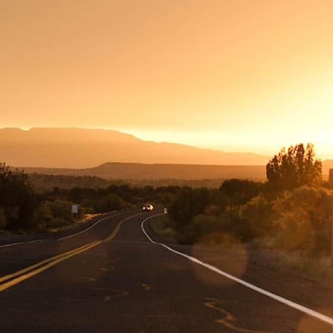
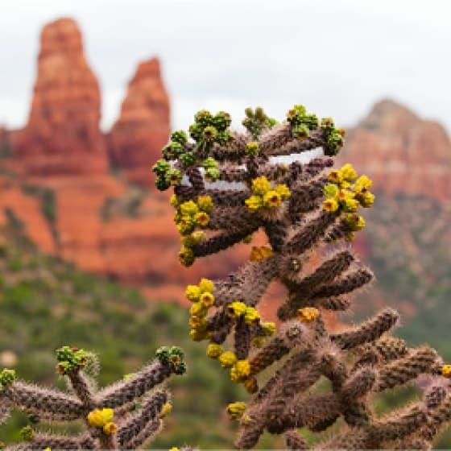
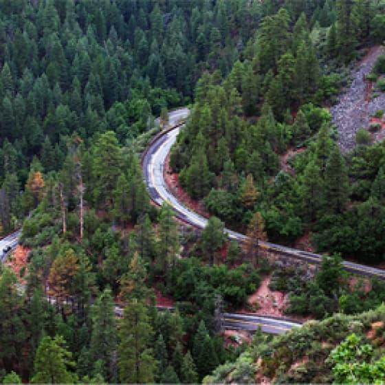
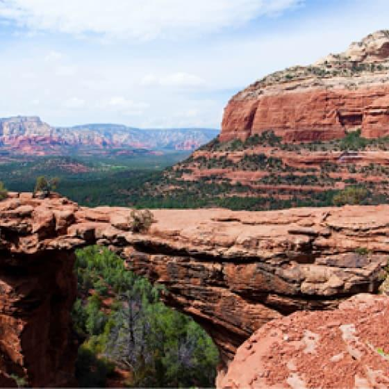

Фото и видео
Не можете решиться на путешествие из-за курса? Фотографии помогут вам забыть о политике и экономике.
Галерея фотографий
 Неродные просторы
 Местная растительность
 Дорога на север
 Мост дьявола
Не можете решиться на путешествие из-за курса? Фотографии помогут вам забыть о политике и экономике.